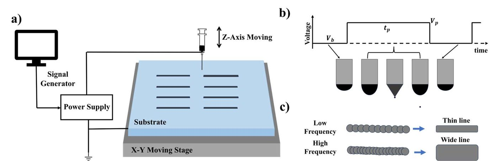
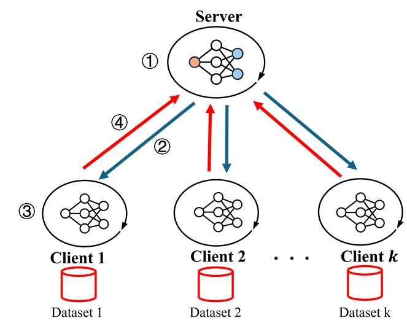
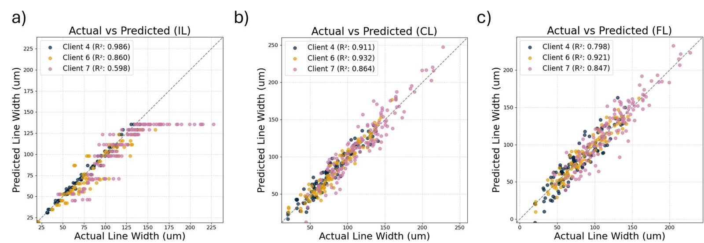

Electrohydrodynamic (EHD) inkjet printing uses an electric field to pull very fine lines of ink out of a nozzle. How wide the line comes out depends on voltage, frequency, duty ratio, standoff distance, and on the particular machine and room. Each lab has its own data and usually can't share it. Federated learning lets every lab train locally and share only model updates.


My part
- Built individual XGBoost regressors and data-processing pipelines for 8 printing-system clients in a study reporting 1,185 experimental runs. These are the baseline the federated framework is compared against.
- Showed that a strong within-client model (R² = 0.983) gave negative R² on four other clients when transferred. That cross-system failure is the motivation for the federated comparison.
